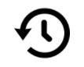

Добре дошли във видео слота LUCK OF RA - тематичен за древната египетска цивилизация. Играта се отличава с различни режими на игра, синхронизация на барабаните, безплатни завъртания, хазарт и много други вълнуващи функции.
ЗА ИГРАТА
LUCK OF RA се играе с 10 фиксирани печеливши линии. Играта има десет редовни символа, които плащат, ако три или повече са подредени на съседни барабани, започвайки от най-лявата позиция на печеливша линия.
РЕЖИМИ НА ИГРА : Играчът може да избере да играе в един от следните режими - стандартна, супер или мега игра
Режими на игра: използва бутон за стандартно завъртане. Играйте нормална игра, като изберете този режим
SРежим на супер игра: използва бутон за подобрено завъртане. Изберете този режим, за да завъртите стрелката и да активирате синхронизация на барабана с всяко завъртане. Попадането на стрелката в зелената зона завърта барабаните, като мега символите са активни. При попадане на стрелката в червената зона се губи залогът.
Режим на мега игра: използва бутон за подобрено завъртане. Изберете този режим, за да завъртите стрелката и директно да влезете в безплатните завъртания. Попадането на стрелката в зелената зона завърта барабаните, като мега скатер символите се виждат изцяло, което предоставя директен достъп до безплатните завъртания. При попадане на стрелката в червената зона се губи залогът.
БЕЗПЛАТНИ ЗАВЪРТАНИЯ
Символът за скролиране, който се вижда изцяло, задейства 8 безплатни завъртания. Преди бонуса за безплатни завъртания, 2 различни символа са избрани, за да се използват в играта с безплатни завъртания. Избраните символи действат като специални разширяващи се символи. Ако на 2 или 3 или повече барабани има специални символи, след като са задействани печалби за редовни печеливши комбинации, специалният(ите) символ(и) се разширява(т), за да покрият всички вертикални позиции на барабаните, на които се намират. Символът, който дава по-малка печалба, ще се задейства пръв, и след като бъде платен, ще се задейства символът с по-висока печалба. По време на безплатните завъртания, синхронизираните барабани ще действат при всяко завъртане, като потенциално подобряват специалните разширяващи се символи. о време на безплатните завъртания могат да бъдат дадени като печалба допълнителни безплатни завъртания, ако 3x3 скатер символът изцяло попадне и се вижда изцяло. 8 допълнителни безплатни завъртания ще бъдат дадени със същите разширяващи се символи.
БОНУСНА ПОКУПКА
Тази функция може да бъде запупена на цената, посочена на брояча "бонусна покупка". ако наличното салдо е равно на цената на бонусната покупка, салдото ще бъде намалено до нула, което автоматично задейства функцията.
ХАЗАРТ
В играта има опционален рунд за хазарт, който дава възможност на играча да умножи общата си награда в основната игра, само като правилно. Ознае цвета или типа на скрита карта. Правилният цвят изплаща x2, а правилният тип карта изплаща x4. Хазартният рунд може да се играе до 5 пъти поред или до макс. Праг от €250 000 или еквивалента във валута
КАК ДА ИГРАЯ
-
Изберете своя залог/деноминация на монета.
-
Кликнете върху (за работен плот) или докоснете (за мобилни устройства) бутона Spin (завъртане), за да започнете цикъл на игра.
БУТОНИ ЗА ИГРИ
|
Икона |
Работен плот |
Мобилен |
Действие |
|
|
въртене | въртене | Започва един цикъл |
| Макс. залог | (съдържащ се в екрана за избор на залози в менюто с настройки) | Задава конфигурацията на залога до максималното ниво на залога. Бутонът за завъртане е натиснат, за да започне. | |
|
|
Автоматично изпълнение | Задръжте Завъртане за автоматично изпълнение (или се съдържа в менюто с настройки) | Показва екран с меню, показващ всички опции за автоматично изпълнение, налични в играта, за да инициирате няколко цикъла едновременно. |
|
|
Избор на залог | Избор на залог (или съдържащ се в менюто с настройки) | Показва опциите за залози, за да може играчът да избере нивото на своя залог. |
|
|
Меню с настройки | Меню с настройки | Отваря се отделен екран за настройки, който предлага следното: Начало; Аудио; Игрови настройки; История; Инфо/Помощ и касиер (където се изисква) |
|
|
Аудио | (Основната зона за настройките в менюто с настройки) | Работен плот - отваря менюто за аудио настройки, за да позволи на играча независимо да включва или изключва музика или ефекти. |
|
|
Турбо игра | (налична в менюто с настройки на играта) | Започва промяна на скоростта на барабаните до Бързо завъртане. |
| ХАЗАРТ | ХАЗАРТ | Стартира хазартна функция след печалби в базовата игра. | |
|
|
ВЗЕМАНЕ | ВЗЕМАНЕ | Вземете спечелената сума и прескочете функцията Хазарт. |
 |
РЕЖИМИ НА ИГРА | РЕЖИМИ НА ИГРА | Изберете режима на игра, с който играчът иска да заложи. |
БУТОНИ ЗА НАСТРОЙКА
| Символ | Икона | Поведение |
| История на играта |  | Показва на играча списък с игрални цикли, играни в рамките на тази игрална сесия. |
| Настройки за залога |
|
Оттук играчът може да определи стойността на залога за играта или да направи избор на някоя от другите налични опции. |
| Автоматични изпълнения |
|
Инициализира страницата, от която могат да бъдат избрани и инициирани различните опции за стандартни и разширени автоматични опции, включително лимити на загуби (където е приложимо) |
| Настройки на играта |
|
Показва различните налични опции за общи настройки (например Избираеми от играча аудио настройки, чрез които играчите могат да определят кои звуци искат да бъдат възпроизведени по време на сесията) |
| Начало |
|
Затваря текущата игрална сесия (след последно подканяне) и връща екрана обратно към страниците за главните менюта на операторите. |
ДРУГА ИНФОРМАЦИЯ ЗА ИГРАТА
-
Съвпадащите печалби на различни печеливши редове се събират заедно и се изплащат на играча.
-
Стойност на монетата - Показва теоретичната награда за залога на текущата настройка. Всички печалби се показват в монети, които трябва да се умножат по стойността на монетата, за да се превърнат в парична награда. Пари в брой/Монета - Показва салдото на сметката ви както в пари в брой (парична стойност), така и в монети (брой кредити) в зависимост от избора на играча. Показваната стойност по подразбиране е в "Пари в брой". Конвертирането на пари в монети и обратно се извършва до 2 десетични знака, за да се постигнат най-близките оригинални стойности, но в играта конвертирането на монети винаги ще показва цяло число.
-
Залог - Показва стойността на залога на текущата настройка. Размерът на залога е 1 монета, умножена с коефициента на залога.
-
ОБЩИЯТ ЗАЛОГ Е СТОЙНОСТТА НА МОНЕТИТЕ, УМНОЖЕНА ПО КОЕФИЦИЕНТА НА ЗАЛОГА, КОЙТО Е 40 МОНЕТИ.
-
Макс .залог (САМО за работен плот) - Задава стойността на монетата до най-голямата налична.
-
Бутон за завъртане - Стартира играта. Когато барабаните се въртят, бутонът за завъртане се превръща в бутона за Турбо завъртане. Натиснете бутона Турбо спиране, за да спрете незабавно барабаните.
-
Автоматично - можете да настроите играта на възпроизвеждане, без да е необходимо да натискате бутона за завъртане всеки път. Изберете броя кръгове за автоматична игра чрез натискане на бутона за автоматична игра (или като задържите бутона за завъртане, за да отворите менюто за автоматична игра (за мобилни устройства)). Когато е приложимо, можете да изберете допълнителни условия за това кога да спрете автоматичната игра в настройките за игри. Ограничението на загубите в някои версии на клиентски игри ви предпазва от загуба над зададения лимит по време на сесията ви за автоматична игра. За да спрете ръчно автоматичното изпълнение, натиснете бутона Спри автоматичното изпълнение
-
Печалба - Показва печалбата за текущата или последната изплатена печалба.
-
Пари в брой/Монета - Показва салдото на сметката ви както в пари в брой (парична стойност), така и в монети (брой кредити) в зависимост от избора на играча. Показваната стойност по подразбиране е в "Пари в брой".
-
Конвертирането на пари в монети и обратно се извършва до 2 десетични знака, за да се постигнат най-близките оригинални стойности, но в играта конвертирането на монети винаги ще показва цяло число.
ВЪЗВРЪЩАЕМОСТ ЗА ИГРАЧА
-
Общата теоретична възвръщаемост за играча е 96.01%.
ДОПЪЛНИТЕЛНА ИНФОРМАЦИЯ
-
Всички печеливши комбинации се изплащат отляво надясно на печеливш ред, като всяка от тях започва от барабан 1, с изключение на скатер комбинациите, които могат да се появят на всяка позиция.
-
Печалбите, постигнати в рамките на Функциите, се изплащат в допълнение към комбинациите от начини.
-
В случай на неизправност на хазартния хардуер/софтуер, всички засегнати залози и изплащания на игри се анулират и всички засегнати залози се възстановяват.
-
Максималната печалба в играта има горна граница еквивалентен до €250 000.